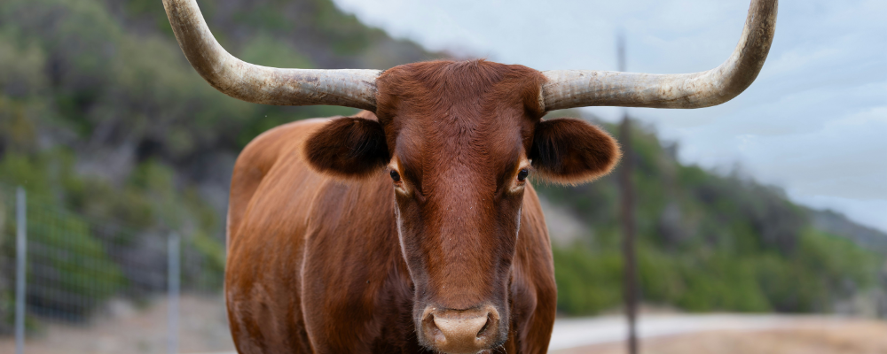
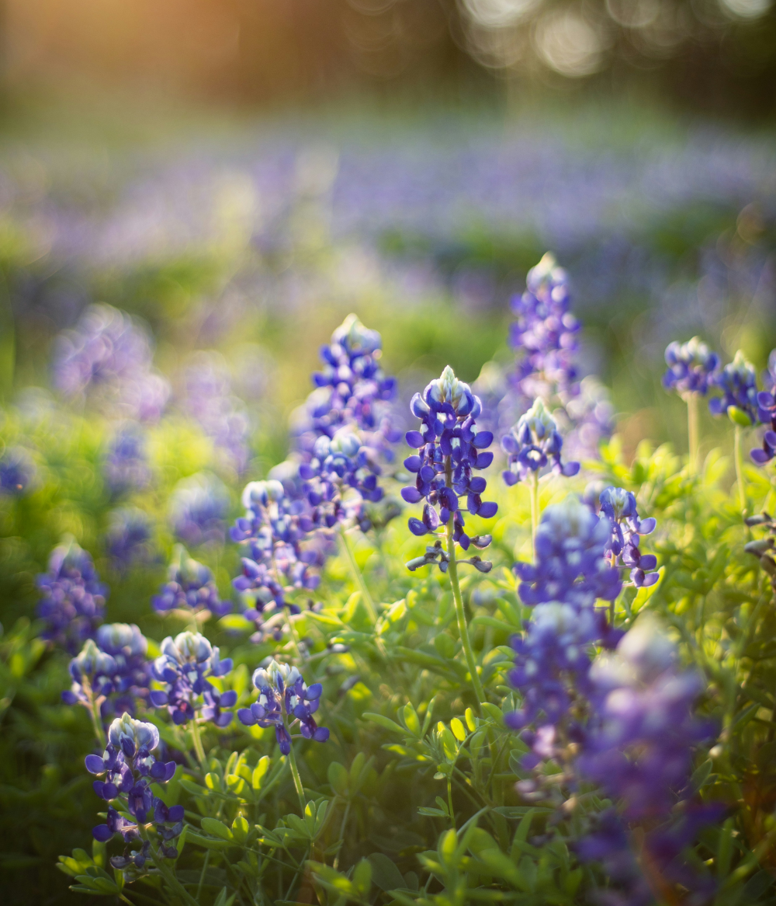
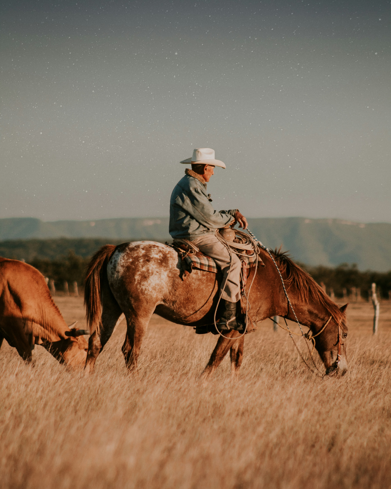

The Lone Star State

About Texas
Texas, nicknamed "The Lone Star State" because of its flag design, was the 28th state to join the Union in 1845. It is the second largest state in the United States, covering roughly 268,600 square miles. Coincidentally, it is also the second largest in terms of population size, with an estimated resident count of 31.7 million in 2025.

Due to the size and widely varying geography of the state, denizens unofficially divide Texas into 5 regions: North, East, South, West, and Central Texas. It is theorized that these colloquial regions may come from a provision included in the annexation of Texas, which would have allowed the territory to be divided into as many as 5 states; a proposal which would make several reappearances throughout the 19th century.
The state's flower is the Bluebonnet, which blooms in early spring. For a few short weeks, acres of land will be painted blue by thousands of flowers. Its a common Texas tradition to get dressed up and take family photos whilst sitting amongst the flowers. Coincidentally, the number emergency room visits due to rattlesnake bites consistently increases during this time of year. Terrain throughtout the state varies depending on the region, but much of Texas could be considered plains. Central and North Texas consists of hilly grasslands, whilst East Texas is known for its vast pine tree forests. West Texas is more of a mountainous desert region, and South Texas contains arid flatlands to the West and a coast to the East. Of course, there is overlap between the geography, climate, and foliage of each region, so the above generalizations do not describe the entirety of each area.
Throughout Texas, climate mostly only differs in terms of humidity. Of course the north will see cooler weather than the south, but overall the state's temperature ranges from hot, hotter, house fire, and hell. Ideal temperatures (mid 60s to low 80s) are usually from October to November, and March to May. January and February are the coldest months, but overall daytime temperatures are in the low 40s to mid 50s. Winters will see a few brutal days or weeks a year when a northern cold front blows in, but Central and Southern Texas can go years without seeing ice or snow (Christmas is celebrated in shorts and sandals at least every few years). From June to September, temperatures tend to be miserably hot—often to a dangerous degree (high 90s to over 100 °F most days).

Texas Culture and Economy
Texas has the most farms of all 50 states, and agriculture has always been a major contributor to the states financial wealth. More specifically, cattle ranching is the backbone of the economic and cultural development of Texas, making it a major point of pride for a lot citizens and leading to the beloved Texas Longhorn becoming a symbol of the state. To this day, Texas is commonly associated with cowboy iconography. Agriculture still remains a driving force of the Texas economy, but in modern times the state also relies on exports, notably oil and natural gas.
The stereotypical clothing for a Texan is a cowboy hat, cowboy boots, jeans, and a flannel shirt. Usually, stereotypes are far from reality, but in this case there is some truth to it. Cowboy boots and jeans are a popular combination amonst men and women alike, though of course not everyone dresses that way. Cowboy hats are also not uncommon, but are mostly worn for legitimate sun protection or for outdoor events such as rodeos or fairs.
Christianity is the dominant religion in Texas, which is no suprise considering its location along the Bible belt. The state also leans more conservative in its political values. For example, traditional gender roles are highly valued and residents tend to be less tolerant of people whom do not fit the social norm (e.g. LGBTQ members, followers of other religions, et c.). That being said, Texas is also known for it's Southern hospitality. Many Texans would go out of their way to help someone in need, and it is common for people to smile and wave when crossing paths on the street. Most residents are decent people who treat everyone with the same amount of respect, but it is worth noting that it is more socially acceptable to have and act on bigoted values in certain regions of Texas.
As far as food goes, Texas is known for having phenomenal barbeque. It is an unofficial Texas tradition to make your dad, uncle, brother, or grandpa fire up the grill at least a few times a year (usually during long weekends). Another staple of the Texas diet is what can only be called comfort foods. Generally, this category encompasses any meal with an entree that is covered in batter and deep fried (fried chicken tenders, chicken fried steak, fried fish, fried pork chops, et c.), and is most often served alongside white gravy (which is literally just flour and butter). Also prominent in the Texan food pyramid are Tex-mex and traditional Mexican recipes.
Moving to Texas?
Interested in moving to Texas? Check out the official Texas website for a checklist. The most important tasks are transfering your drivers license, registering your vehicle, and registering to vote. For the first two items, you have 90 and 30 days respectively after moving to complete those items. To vote in Texas, you will need to complete your voters registration at least 30 days before the next election.
Another, equally important task is ensuring the moving company you choose is licensed with the Texas Department of Motor Vehicles (TxDMV for short). To verify the company, ask the mover for their TxDMV registration number and look it up in the TxDMV hosted database. If the number has an "ACTIVE" status, the license is legitimate. Using an unregistered mover may result in your belongings being lost or stolen.
Back to top.Texas Careers
Don't have a job secured for after the big move? Wanting to change careers? Use the workintexas online portal to help you build a resume, search for jobs by career field, and submit job applications. The portal can also help you enroll in training and college programs, request for financial aid, and apply for scolarships.
Top 10 Growing Occupations in Texas
- General and Operations Manager
- Software Developer
- Registered Nurse
- Heavy and Tractor-Trailer Truck Driver
- Medical and Health Services Manager
- Computer and Information Systems Manager
- Financial Manager
- Accountant and Auditor
- Project Management Specialist
- Human Resources Specialist